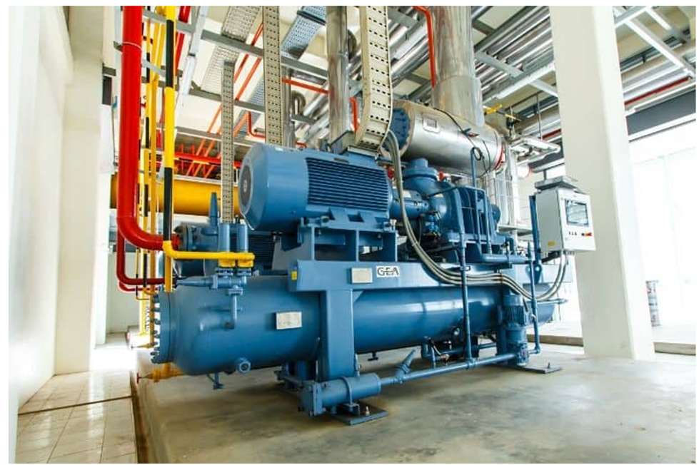

Industrial Applications of VFDs
VFDs are widely used in industrial automation to control motor speed, improve energy efficiency, and enhance process control. Their ability to provide smooth and flexible motor operation makes them suitable for a wide range of applications.
Key Applications of VFDs
- HVAC Systems: Fans, blowers, and pumps in heating, ventilation, and air conditioning use VFDs to match motor speed with load requirements, increasing energy efficiency and lowering utility bills.
- Pumps and Fans: Used in water treatment, oil refineries, and industrial processes to control flow and pressure, offering better performance than traditional throttling methods.
- Conveyor Systems: VFDs allow conveyors in manufacturing, packaging, and material handling to adjust speeds for different production phases, enhancing efficiency.
- Industrial Machinery: Applied to mixers, agitators, grinders, centrifuges, and extruders for precise speed control and consistent product quality.
- Compressors: Used in refrigeration and industrial systems to control speed based on demand, reducing energy usage and enhancing system efficiency.
- Material Handling & Lifting: Cranes, hoists, and elevators use VFDs for smooth acceleration, deceleration, and improved safety, which reduces mechanical wear.
- Energy Management: Implemented to reduce energy consumption in pumps, fans, and blowers by allowing motors to operate at lower speeds when demand is low.


